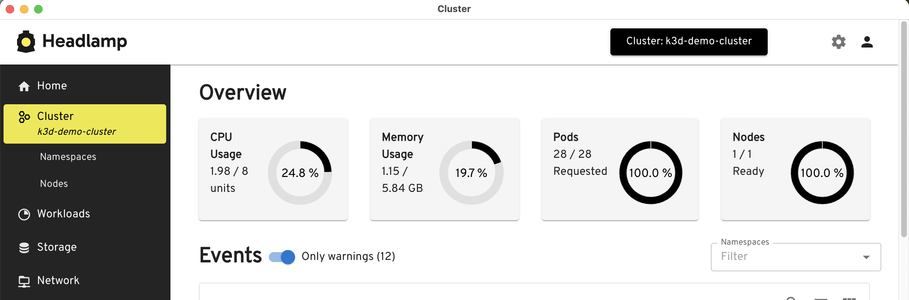
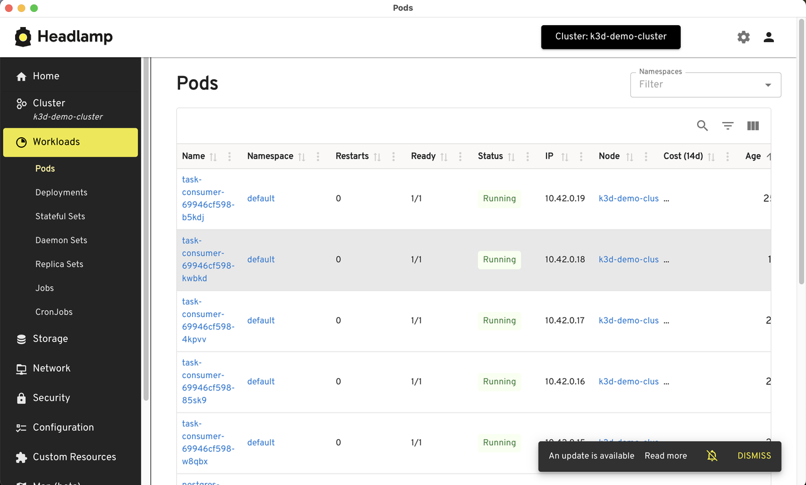

Autoscale k8s pods with queue size (KEDA)

Introduction
Kubernetes(k8s) is a popular container orchestration tool, and it provides Horizontal Pod Autoscaler(HPA) to scale pods based on CPU and Memory usage.
To scale pods based on the queue size we can use KEDA.
Setup
For this demo, we will use PostgreSQL table to store tasks and KEDA to scale the pods based on the queue size.
As written earlier, we can use k3d and setup k8s cluster with a single command anywhere.
Once the cluster is up, we can set up a simple shell script to produce and consume tasks from the PostgreSQL table.
I am adding only relevant snippets here. You can find the complete code in the GitHub repo.
PostgreSQL deployment:
apiVersion: apps/v1 kind: Deployment metadata: name: postgres-deployment spec: template: spec: containers: - name: postgres image: postgres:13
Producer shell script:
#!/bin/bash psql -h "$DB_HOST" -U "$DB_USER" -d "$DB_NAME" <<-EOSQL CREATE TABLE IF NOT EXISTS tasks ( id SERIAL PRIMARY KEY, description TEXT NOT NULL, status TEXT NOT NULL ); EOSQL # Continuously insert tasks while true; do psql -h "$DB_HOST" -U "$DB_USER" -d "$DB_NAME" <<-EOSQL INSERT INTO tasks (description, status) VALUES ('$DESCRIPTION', '$STATUS'); done
Producer dockerfile:
FROM postgres:13 RUN apt-get update && apt-get install -y bash curl COPY producer.sh /producer.sh RUN chmod +x /producer.sh CMD ["/producer.sh"]
Producer deployment:
apiVersion: apps/v1 kind: Deployment spec: template: spec: containers: - name: task-producer image: task-producer imagePullPolicy: Never
Consumer shell script:
#!/bin/bash TASK=$(psql -h "$DB_HOST" -U "$DB_USER" -d "$DB_NAME" -t <<-EOSQL SELECT id, description, status FROM tasks WHERE status != 'Completed' ORDER BY id LIMIT 1; EOSQL TASK_ID=$(echo "$TASK" | awk '{print $1}') psql -h "$DB_HOST" -U "$DB_USER" -d "$DB_NAME" <<-EOSQL UPDATE tasks SET status = 'Completed' WHERE id = $TASK_ID; EOSQL
Consumer dockerfile:
FROM postgres:13 RUN apt-get update && apt-get install -y bash COPY consumer.sh /consumer.sh RUN chmod +x /consumer.sh CMD ["/consumer.sh"]
Consumer deployment:
apiVersion: apps/v1 kind: Deployment spec: template: spec: containers: - name: task-consumer image: task-consumer imagePullPolicy: Never
Instead of pushing these images to any container registry, we can directly load the images into cluster using k3d image.
k3d image import task-producer --cluster demo-cluster k3d image import task-consumer --cluster demo-cluster
After that, we can deploy postgres, consumer and producer using the above deployment files.
Once the deployment is done, we can monitor the tasks from pod logs.
Lets install KEDA in the cluster and setup a scaled-object to scale the consumer pods based on number of pending tasks.
helm repo add kedacore https://kedacore.github.io/charts helm repo update helm install keda kedacore/keda
ScaledObject:
apiVersion: keda.sh/v1alpha1 kind: ScaledObject metadata: name: task-consumer-scaler namespace: default spec: scaleTargetRef: name: task-consumer pollingInterval: 1 cooldownPeriod: 1 minReplicaCount: 0 maxReplicaCount: 50 triggers: - type: postgresql metadata: host: postgres-service query: "SELECT COUNT(*) FROM tasks WHERE status != 'Completed';" targetQueryValue: "10"
With this, KEDA will scale the consumer pods based on the number of tasks in the PostgreSQL table. The targetQueryValue is set to 10, which means if there are more than 10 tasks in the table, KEDA will scale up the consumer pods.
In the cluster, after a while, a bunch of tasks will be created in the PostgreSQL table. Now, we can set the status of all tasks to empty so that we can see auto-scaling in action.
kubectl exec -it task-producer-<pod-id> -- psql -h "$DB_HOST" -U "$DB_USER" -d "$DB_NAME" <<-EOSQL UPDATE tasks SET status = ''; EOSQL
On k8s dashboard, we can see the consumer pods scaling up and down based on the number of tasks in the PostgreSQL table.

Conclusion
KEDA is a powerful tool to scale k8s pods based on custom metrics. In this post, we have used PostgreSQL but we can use KEDA with variety of other data stores as well. Full code for this post is available here.
Need further help with this? Feel free to send a message.

Anand Reddy Pandikunta (ChillarAnand)
Improving Health & Wealth with Technology